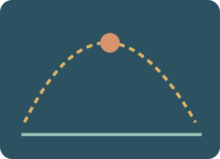

Motion and projectiles Preparation and worked examples
Motion is described relative to an origin, a positive direction and a clock. Position tells where an object is; displacement compares its final and initial positions. Average speed uses total distance, while average velocity uses displacement. Acceleration describes a change in velocity, including a change of direction.
The slope of a position–time graph is velocity; the slope of a velocity–time graph is acceleration, and its signed area is displacement. Use one shared clock in catch-up problems. A delayed object stays at its starting position before release and then moves for t minus its delay. Free-fall and projectile models need their assumptions, particularly negligible air resistance.
If A starts at 20 m at 3 m/s and B starts from 0 m two seconds later at 5 m/s, equal positions give 20 + 3t = 5(t − 2). They meet at t = 15 s and x = 65 m. B has moved for 13 s; equal meeting position does not mean equal distances travelled.

Read and explain. Learn the vocabulary and say why the process works.
Work through an example. Identify the known information, rule and result.
Investigate, then apply. Return to the practical, game or revision simulator.
Read the symbols and units
Use this reference whenever a letter, subscript or unit in an example is new to you. A subscript is a smaller label, such as ₁ for the first state; an exponent is a power, such as ² for a square.
01
Motion quantities
Understand the ideas
Displacement is a vector from initial to final position; distance is total path length.
a = Δv/Δt.
Use signed position changes: +10 − 4 = +6 m.
Velocity gives direction of motion; acceleration gives direction of velocity change.
Net position change may be zero even when a nonzero path was travelled.
a = (v − u)/t = (10 − 2)/4. Result: 2 m/s².
a = (v − u)/t = (4 − 10)/3. Result: -2 m/s².
a = (v − u)/t = (15 − 0)/5. Result: 3 m/s².
a = (v − u)/t = (0 − 8)/4. Result: -2 m/s².
a = (v − u)/t = (4 − -2)/3. Result: 2 m/s².
Follow the worked examples
Try to explain the example first, then open it to compare your reasoning.
Worked example · Displacement differs from distance because it includes…
Result: Direction and only the change in position
Reasoning: Displacement is a vector from initial to final position; distance is total path length.
Explain the reasoning in your own words, then compare it with the practical model. For a calculation, identify the known quantities and units before choosing the rule.
Worked example · Acceleration is the rate of change of…
Result: Velocity
Reasoning: a = Δv/Δt.
Explain the reasoning in your own words, then compare it with the practical model. For a calculation, identify the known quantities and units before choosing the rule.
Worked example · A runner travels 10 m east then 4 m west. Displacement is…
Result: 6 m east
Reasoning: Use signed position changes: +10 − 4 = +6 m.
Explain the reasoning in your own words, then compare it with the practical model. For a calculation, identify the known quantities and units before choosing the rule.
Worked example · Can an object have negative velocity and positive acceleration?
Result: Yes; it can be moving left while slowing down
Reasoning: Velocity gives direction of motion; acceleration gives direction of velocity change.
Explain the reasoning in your own words, then compare it with the practical model. For a calculation, identify the known quantities and units before choosing the rule.
Worked example · A trolley returns to its starting position after moving. Which can be zero?
Result: Displacement, while distance is positive
Reasoning: Net position change may be zero even when a nonzero path was travelled.
Explain the reasoning in your own words, then compare it with the practical model. For a calculation, identify the known quantities and units before choosing the rule.
Worked example · Velocity changes from 2 m/s to 10 m/s in 4 s. Find the constant acceleration. Give the closest value.
Result: 2 m/s²
Reasoning: a = (v − u)/t = (10 − 2)/4. Result: 2 m/s².
Explain the reasoning in your own words, then compare it with the practical model. For a calculation, identify the known quantities and units before choosing the rule.
Worked example · Velocity changes from 10 m/s to 4 m/s in 3 s. Find the constant acceleration. Give the closest value.
Result: -2 m/s²
Reasoning: a = (v − u)/t = (4 − 10)/3. Result: -2 m/s².
Explain the reasoning in your own words, then compare it with the practical model. For a calculation, identify the known quantities and units before choosing the rule.
Worked example · Velocity changes from 0 m/s to 15 m/s in 5 s. Find the constant acceleration. Give the closest value.
Result: 3 m/s²
Reasoning: a = (v − u)/t = (15 − 0)/5. Result: 3 m/s².
Explain the reasoning in your own words, then compare it with the practical model. For a calculation, identify the known quantities and units before choosing the rule.
Worked example · Velocity changes from 8 m/s to 0 m/s in 4 s. Find the constant acceleration. Give the closest value.
Result: -2 m/s²
Reasoning: a = (v − u)/t = (0 − 8)/4. Result: -2 m/s².
Explain the reasoning in your own words, then compare it with the practical model. For a calculation, identify the known quantities and units before choosing the rule.
Worked example · Velocity changes from -2 m/s to 4 m/s in 3 s. Find the constant acceleration. Give the closest value.
Result: 2 m/s²
Reasoning: a = (v − u)/t = (4 − -2)/3. Result: 2 m/s².
Explain the reasoning in your own words, then compare it with the practical model. For a calculation, identify the known quantities and units before choosing the rule.
02
Motion graphs
Understand the ideas
Gradient gives change in position per unit time.
Gradient gives velocity change per unit time.
The time integral of velocity is displacement.
Position is not changing, so velocity is zero.
Velocity zero at the crossing separates motion in opposite directions.
s = ut + ½at² = 2×4 + 0.5×1×4². This is signed displacement. Result: 16 m.
s = ut + ½at² = 4×4 + 0.5×-2×4². This is signed displacement. Result: 0 m.
s = ut + ½at² = 0×5 + 0.5×3×5². This is signed displacement. Result: 37.5 m.
s = ut + ½at² = 6×3 + 0.5×-1×3². This is signed displacement. Result: 13.5 m.
s = ut + ½at² = -2×4 + 0.5×2×4². This is signed displacement. Result: 8 m.
Follow the worked examples
Try to explain the example first, then open it to compare your reasoning.
Worked example · The gradient of a position–time graph is…
Result: Velocity
Reasoning: Gradient gives change in position per unit time.
Explain the reasoning in your own words, then compare it with the practical model. For a calculation, identify the known quantities and units before choosing the rule.
Worked example · The gradient of a velocity–time graph is…
Result: Acceleration
Reasoning: Gradient gives velocity change per unit time.
Explain the reasoning in your own words, then compare it with the practical model. For a calculation, identify the known quantities and units before choosing the rule.
Worked example · Signed area under a velocity–time graph gives…
Result: Displacement
Reasoning: The time integral of velocity is displacement.
Explain the reasoning in your own words, then compare it with the practical model. For a calculation, identify the known quantities and units before choosing the rule.
Worked example · A horizontal position–time line indicates…
Result: Constant position
Reasoning: Position is not changing, so velocity is zero.
Explain the reasoning in your own words, then compare it with the practical model. For a calculation, identify the known quantities and units before choosing the rule.
Worked example · A velocity–time graph crossing from positive to negative velocity indicates…
Result: Reversal of direction
Reasoning: Velocity zero at the crossing separates motion in opposite directions.
Explain the reasoning in your own words, then compare it with the practical model. For a calculation, identify the known quantities and units before choosing the rule.
Worked example · At constant acceleration 1 m/s², a trolley starts at u = 2 m/s. Find displacement after 4 s. Give the closest value.
Result: 16 m
Reasoning: s = ut + ½at² = 2×4 + 0.5×1×4². This is signed displacement. Result: 16 m.
Explain the reasoning in your own words, then compare it with the practical model. For a calculation, identify the known quantities and units before choosing the rule.
Worked example · At constant acceleration -2 m/s², a trolley starts at u = 4 m/s. Find displacement after 4 s. Give the closest value.
Result: 0 m
Reasoning: s = ut + ½at² = 4×4 + 0.5×-2×4². This is signed displacement. Result: 0 m.
Explain the reasoning in your own words, then compare it with the practical model. For a calculation, identify the known quantities and units before choosing the rule.
Worked example · At constant acceleration 3 m/s², a trolley starts at u = 0 m/s. Find displacement after 5 s. Give the closest value.
Result: 37.5 m
Reasoning: s = ut + ½at² = 0×5 + 0.5×3×5². This is signed displacement. Result: 37.5 m.
Explain the reasoning in your own words, then compare it with the practical model. For a calculation, identify the known quantities and units before choosing the rule.
Worked example · At constant acceleration -1 m/s², a trolley starts at u = 6 m/s. Find displacement after 3 s. Give the closest value.
Result: 13.5 m
Reasoning: s = ut + ½at² = 6×3 + 0.5×-1×3². This is signed displacement. Result: 13.5 m.
Explain the reasoning in your own words, then compare it with the practical model. For a calculation, identify the known quantities and units before choosing the rule.
Worked example · At constant acceleration 2 m/s², a trolley starts at u = -2 m/s. Find displacement after 4 s. Give the closest value.
Result: 8 m
Reasoning: s = ut + ½at² = -2×4 + 0.5×2×4². This is signed displacement. Result: 8 m.
Explain the reasoning in your own words, then compare it with the practical model. For a calculation, identify the known quantities and units before choosing the rule.
03
Free fall
Understand the ideas
Without air resistance, acceleration is independent of mass at a fixed location.
Released from rest means u = 0.
Gravity gives approximately constant downward acceleration.
t = √(2h/g), which increases when g is smaller.
Drag depends on shape, area, speed and fluid properties; the vacuum model removes it.
h = ½gt², so t = √(2h/g). Result: 1.01 s.
h = ½gt², so t = √(2h/g). Result: 1.43 s.
h = ½gt², so t = √(2h/g). Result: 2.02 s.
h = ½gt², so t = √(2h/g). Result: 2.47 s.
h = ½gt², so t = √(2h/g). Result: 3.19 s.
Follow the worked examples
Try to explain the example first, then open it to compare your reasoning.
Worked example · In a vacuum, a feather and ball released together at the same height have…
Result: The same gravitational acceleration
Reasoning: Without air resistance, acceleration is independent of mass at a fixed location.
Explain the reasoning in your own words, then compare it with the practical model. For a calculation, identify the known quantities and units before choosing the rule.
Worked example · For a drop from rest, initial vertical velocity is…
Result: Zero
Reasoning: Released from rest means u = 0.
Explain the reasoning in your own words, then compare it with the practical model. For a calculation, identify the known quantities and units before choosing the rule.
Worked example · In free fall near Earth without air resistance, downward speed…
Result: Increases by about 9.81 m/s each second
Reasoning: Gravity gives approximately constant downward acceleration.
Explain the reasoning in your own words, then compare it with the practical model. For a calculation, identify the known quantities and units before choosing the rule.
Worked example · The Moon’s smaller g makes a drop from the same height take…
Result: Longer
Reasoning: t = √(2h/g), which increases when g is smaller.
Explain the reasoning in your own words, then compare it with the practical model. For a calculation, identify the known quantities and units before choosing the rule.
Worked example · The feather falls slowly in air mainly because…
Result: Air resistance is important relative to its weight
Reasoning: Drag depends on shape, area, speed and fluid properties; the vacuum model removes it.
Explain the reasoning in your own words, then compare it with the practical model. For a calculation, identify the known quantities and units before choosing the rule.
Worked example · An object drops from rest through 5 m in vacuum near Earth. Use g = 9.81 m/s². Find the fall time. Give the closest value.
Result: 1.01 s
Reasoning: h = ½gt², so t = √(2h/g). Result: 1.01 s.
Explain the reasoning in your own words, then compare it with the practical model. For a calculation, identify the known quantities and units before choosing the rule.
Worked example · An object drops from rest through 10 m in vacuum near Earth. Use g = 9.81 m/s². Find the fall time. Give the closest value.
Result: 1.43 s
Reasoning: h = ½gt², so t = √(2h/g). Result: 1.43 s.
Explain the reasoning in your own words, then compare it with the practical model. For a calculation, identify the known quantities and units before choosing the rule.
Worked example · An object drops from rest through 20 m in vacuum near Earth. Use g = 9.81 m/s². Find the fall time. Give the closest value.
Result: 2.02 s
Reasoning: h = ½gt², so t = √(2h/g). Result: 2.02 s.
Explain the reasoning in your own words, then compare it with the practical model. For a calculation, identify the known quantities and units before choosing the rule.
Worked example · An object drops from rest through 30 m in vacuum near Earth. Use g = 9.81 m/s². Find the fall time. Give the closest value.
Result: 2.47 s
Reasoning: h = ½gt², so t = √(2h/g). Result: 2.47 s.
Explain the reasoning in your own words, then compare it with the practical model. For a calculation, identify the known quantities and units before choosing the rule.
Worked example · An object drops from rest through 50 m in vacuum near Earth. Use g = 9.81 m/s². Find the fall time. Give the closest value.
Result: 3.19 s
Reasoning: h = ½gt², so t = √(2h/g). Result: 3.19 s.
Explain the reasoning in your own words, then compare it with the practical model. For a calculation, identify the known quantities and units before choosing the rule.
04
Projectiles
Understand the ideas
Gravity acts vertically in this ideal flat-Earth model.
It changes from upwards to downwards through zero; acceleration remains downward.
The horizontal component remains while the vertical component is zero.
Gravity does not stop acting at the turning point.
R = u² sin(2θ)/g applies to equal-height, no-drag flights.
Resolve the launch velocity: uₓ = u cosθ. Use degree mode. Result: 8.66 m/s.
Resolve the launch velocity: uₓ = u cosθ. Use degree mode. Result: 14.1 m/s.
Resolve the launch velocity: uₓ = u cosθ. Use degree mode. Result: 12.5 m/s.
Resolve the launch velocity: uₓ = u cosθ. Use degree mode. Result: 12.3 m/s.
Resolve the launch velocity: uₓ = u cosθ. Use degree mode. Result: 19.3 m/s.
Follow the worked examples
Try to explain the example first, then open it to compare your reasoning.
Worked example · Without air resistance, a projectile’s horizontal acceleration is…
Result: Zero
Reasoning: Gravity acts vertically in this ideal flat-Earth model.
Explain the reasoning in your own words, then compare it with the practical model. For a calculation, identify the known quantities and units before choosing the rule.
Worked example · At a projectile’s highest point, the vertical velocity is…
Result: Zero
Reasoning: It changes from upwards to downwards through zero; acceleration remains downward.
Explain the reasoning in your own words, then compare it with the practical model. For a calculation, identify the known quantities and units before choosing the rule.
Worked example · At the highest point, a nonvertical projectile’s total speed is…
Result: Its horizontal speed, not generally zero
Reasoning: The horizontal component remains while the vertical component is zero.
Explain the reasoning in your own words, then compare it with the practical model. For a calculation, identify the known quantities and units before choosing the rule.
Worked example · The vertical acceleration at the top of the flight is…
Result: Still −g
Reasoning: Gravity does not stop acting at the turning point.
Explain the reasoning in your own words, then compare it with the practical model. For a calculation, identify the known quantities and units before choosing the rule.
Worked example · Complementary launch angles have equal ideal ranges only when…
Result: Speed is equal, launch and landing heights match, and drag is absent
Reasoning: R = u² sin(2θ)/g applies to equal-height, no-drag flights.
Explain the reasoning in your own words, then compare it with the practical model. For a calculation, identify the known quantities and units before choosing the rule.
Worked example · A projectile launches at 10 m/s at 30° above horizontal. Find its initial horizontal velocity. Give the closest value.
Result: 8.66 m/s
Reasoning: Resolve the launch velocity: uₓ = u cosθ. Use degree mode. Result: 8.66 m/s.
Explain the reasoning in your own words, then compare it with the practical model. For a calculation, identify the known quantities and units before choosing the rule.
Worked example · A projectile launches at 20 m/s at 45° above horizontal. Find its initial horizontal velocity. Give the closest value.
Result: 14.1 m/s
Reasoning: Resolve the launch velocity: uₓ = u cosθ. Use degree mode. Result: 14.1 m/s.
Explain the reasoning in your own words, then compare it with the practical model. For a calculation, identify the known quantities and units before choosing the rule.
Worked example · A projectile launches at 25 m/s at 60° above horizontal. Find its initial horizontal velocity. Give the closest value.
Result: 12.5 m/s
Reasoning: Resolve the launch velocity: uₓ = u cosθ. Use degree mode. Result: 12.5 m/s.
Explain the reasoning in your own words, then compare it with the practical model. For a calculation, identify the known quantities and units before choosing the rule.
Worked example · A projectile launches at 15 m/s at 35° above horizontal. Find its initial horizontal velocity. Give the closest value.
Result: 12.3 m/s
Reasoning: Resolve the launch velocity: uₓ = u cosθ. Use degree mode. Result: 12.3 m/s.
Explain the reasoning in your own words, then compare it with the practical model. For a calculation, identify the known quantities and units before choosing the rule.
Worked example · A projectile launches at 30 m/s at 50° above horizontal. Find its initial horizontal velocity. Give the closest value.
Result: 19.3 m/s
Reasoning: Resolve the launch velocity: uₓ = u cosθ. Use degree mode. Result: 19.3 m/s.
Explain the reasoning in your own words, then compare it with the practical model. For a calculation, identify the known quantities and units before choosing the rule.
05
Stopping distance
Understand the ideas
The car travels during the driver’s reaction and then during braking.
During the ideal reaction interval, speed is unchanged.
Braking distance v²/(2a) is quadratic in speed.
d_thinking = vt_reaction.
The model assumes a constant chosen deceleration rather than detailed tyre and road mechanics.
d_total = vt_reaction + v²/(2a), with constant speed during reaction and constant deceleration during braking. Result: 17 m.
d_total = vt_reaction + v²/(2a), with constant speed during reaction and constant deceleration during braking. Result: 54 m.
d_total = vt_reaction + v²/(2a), with constant speed during reaction and constant deceleration during braking. Result: 43.1 m.
d_total = vt_reaction + v²/(2a), with constant speed during reaction and constant deceleration during braking. Result: 72.1 m.
d_total = vt_reaction + v²/(2a), with constant speed during reaction and constant deceleration during braking. Result: 120 m.
Follow the worked examples
Try to explain the example first, then open it to compare your reasoning.
Worked example · Total stopping distance is the sum of…
Result: Thinking and braking distances
Reasoning: The car travels during the driver’s reaction and then during braking.
Explain the reasoning in your own words, then compare it with the practical model. For a calculation, identify the known quantities and units before choosing the rule.
Worked example · Thinking distance equals…
Result: Initial speed × reaction time
Reasoning: During the ideal reaction interval, speed is unchanged.
Explain the reasoning in your own words, then compare it with the practical model. For a calculation, identify the known quantities and units before choosing the rule.
Worked example · Doubling speed at fixed braking deceleration multiplies braking distance by…
Result: Four
Reasoning: Braking distance v²/(2a) is quadratic in speed.
Explain the reasoning in your own words, then compare it with the practical model. For a calculation, identify the known quantities and units before choosing the rule.
Worked example · A longer reaction time at unchanged speed gives…
Result: A longer thinking distance
Reasoning: d_thinking = vt_reaction.
Explain the reasoning in your own words, then compare it with the practical model. For a calculation, identify the known quantities and units before choosing the rule.
Worked example · The simple stopping model omits which real effect?
Result: Changing tyre–road grip
Reasoning: The model assumes a constant chosen deceleration rather than detailed tyre and road mechanics.
Explain the reasoning in your own words, then compare it with the practical model. For a calculation, identify the known quantities and units before choosing the rule.
Worked example · A car travels at 10 m/s, the reaction time is 0.7 s and braking deceleration is 5 m/s². Find total stopping distance. Give the closest value.
Result: 17 m
Reasoning: d_total = vt_reaction + v²/(2a), with constant speed during reaction and constant deceleration during braking. Result: 17 m.
Explain the reasoning in your own words, then compare it with the practical model. For a calculation, identify the known quantities and units before choosing the rule.
Worked example · A car travels at 20 m/s, the reaction time is 0.7 s and braking deceleration is 5 m/s². Find total stopping distance. Give the closest value.
Result: 54 m
Reasoning: d_total = vt_reaction + v²/(2a), with constant speed during reaction and constant deceleration during braking. Result: 54 m.
Explain the reasoning in your own words, then compare it with the practical model. For a calculation, identify the known quantities and units before choosing the rule.
Worked example · A car travels at 15 m/s, the reaction time is 1 s and braking deceleration is 4 m/s². Find total stopping distance. Give the closest value.
Result: 43.1 m
Reasoning: d_total = vt_reaction + v²/(2a), with constant speed during reaction and constant deceleration during braking. Result: 43.1 m.
Explain the reasoning in your own words, then compare it with the practical model. For a calculation, identify the known quantities and units before choosing the rule.
Worked example · A car travels at 25 m/s, the reaction time is 0.8 s and braking deceleration is 6 m/s². Find total stopping distance. Give the closest value.
Result: 72.1 m
Reasoning: d_total = vt_reaction + v²/(2a), with constant speed during reaction and constant deceleration during braking. Result: 72.1 m.
Explain the reasoning in your own words, then compare it with the practical model. For a calculation, identify the known quantities and units before choosing the rule.
Worked example · A car travels at 30 m/s, the reaction time is 1 s and braking deceleration is 5 m/s². Find total stopping distance. Give the closest value.
Result: 120 m
Reasoning: d_total = vt_reaction + v²/(2a), with constant speed during reaction and constant deceleration during braking. Result: 120 m.
Explain the reasoning in your own words, then compare it with the practical model. For a calculation, identify the known quantities and units before choosing the rule.
06
Catch-up and delayed starts
Understand the ideas
Use a shared origin and clock to compare positions.
Subtract B’s delay from the common elapsed time.
B’s position is constant while it waits.
The positive gap grows when the object ahead is also faster.
First include A’s travel during the delay; the gap then closes at relative speed vB − vA.
Equal positions: 20 + 3t = 0 + 5(t − 2). Solve for the shared time t, not just B’s moving time. Result: 15 s.
Equal positions: 30 + 3t = 0 + 6(t − 0). Solve for the shared time t, not just B’s moving time. Result: 10 s.
Equal positions: 0 + 3t = 0 + 5(t − 4). Solve for the shared time t, not just B’s moving time. Result: 10 s.
Equal positions: 40 + 2t = 10 + 5(t − 3). Solve for the shared time t, not just B’s moving time. Result: 15 s.
Equal positions: 10 + 4t = 0 + 8(t − 5). Solve for the shared time t, not just B’s moving time. Result: 12.5 s.
Follow the worked examples
Try to explain the example first, then open it to compare your reasoning.
Worked example · Two moving objects meet when they have…
Result: Equal positions at the same clock time
Reasoning: Use a shared origin and clock to compare positions.
Explain the reasoning in your own words, then compare it with the practical model. For a calculation, identify the known quantities and units before choosing the rule.
Worked example · B starts 3 s after A. At shared time t ≥ 3 s, B has moved for…
Result: t − 3 seconds
Reasoning: Subtract B’s delay from the common elapsed time.
Explain the reasoning in your own words, then compare it with the practical model. For a calculation, identify the known quantities and units before choosing the rule.
Worked example · On a position–time graph, B waiting at its start before release is shown by…
Result: A horizontal segment
Reasoning: B’s position is constant while it waits.
Explain the reasoning in your own words, then compare it with the practical model. For a calculation, identify the known quantities and units before choosing the rule.
Worked example · A is ahead and moving faster than B after B starts. With constant speeds, B…
Result: Never catches A
Reasoning: The positive gap grows when the object ahead is also faster.
Explain the reasoning in your own words, then compare it with the practical model. For a calculation, identify the known quantities and units before choosing the rule.
Worked example · When B begins behind A and is faster, the time from B’s release to catching A is…
Result: Gap at B’s release divided by the speed difference
Reasoning: First include A’s travel during the delay; the gap then closes at relative speed vB − vA.
Explain the reasoning in your own words, then compare it with the practical model. For a calculation, identify the known quantities and units before choosing the rule.
Worked example · A starts at 20 m at 3 m/s at t = 0. B waits at 0 m until t = 2 s, then moves at 5 m/s in the same direction. At what time from A’s start does B catch A? Give the closest value.
Result: 15 s
Reasoning: Equal positions: 20 + 3t = 0 + 5(t − 2). Solve for the shared time t, not just B’s moving time. Result: 15 s.
Explain the reasoning in your own words, then compare it with the practical model. For a calculation, identify the known quantities and units before choosing the rule.
Worked example · A starts at 30 m at 3 m/s at t = 0. B waits at 0 m until t = 0 s, then moves at 6 m/s in the same direction. At what time from A’s start does B catch A? Give the closest value.
Result: 10 s
Reasoning: Equal positions: 30 + 3t = 0 + 6(t − 0). Solve for the shared time t, not just B’s moving time. Result: 10 s.
Explain the reasoning in your own words, then compare it with the practical model. For a calculation, identify the known quantities and units before choosing the rule.
Worked example · A starts at 0 m at 3 m/s at t = 0. B waits at 0 m until t = 4 s, then moves at 5 m/s in the same direction. At what time from A’s start does B catch A? Give the closest value.
Result: 10 s
Reasoning: Equal positions: 0 + 3t = 0 + 5(t − 4). Solve for the shared time t, not just B’s moving time. Result: 10 s.
Explain the reasoning in your own words, then compare it with the practical model. For a calculation, identify the known quantities and units before choosing the rule.
Worked example · A starts at 40 m at 2 m/s at t = 0. B waits at 10 m until t = 3 s, then moves at 5 m/s in the same direction. At what time from A’s start does B catch A? Give the closest value.
Result: 15 s
Reasoning: Equal positions: 40 + 2t = 10 + 5(t − 3). Solve for the shared time t, not just B’s moving time. Result: 15 s.
Explain the reasoning in your own words, then compare it with the practical model. For a calculation, identify the known quantities and units before choosing the rule.
Worked example · A starts at 10 m at 4 m/s at t = 0. B waits at 0 m until t = 5 s, then moves at 8 m/s in the same direction. At what time from A’s start does B catch A? Give the closest value.
Result: 12.5 s
Reasoning: Equal positions: 10 + 4t = 0 + 8(t − 5). Solve for the shared time t, not just B’s moving time. Result: 12.5 s.
Explain the reasoning in your own words, then compare it with the practical model. For a calculation, identify the known quantities and units before choosing the rule.
PLAY
Understand before you play
Read the situation and its conditions, identify the changing quantities and explain why your model fits. These examples teach the ideas used by this unit’s games. Hints and revealed solutions are learning tools; they reduce the game stars.
Motion Storyboards · concepts and examples
Match each graph description.
The gradient of a position–time graph is velocity. The area under a velocity–time graph is displacement.
Compare one model solution
Horizontal position–time line → Object at rest; Straight rising position–time line → Constant positive velocity; Straight rising velocity–time line → Constant positive acceleration; Horizontal negative velocity–time line → Constant motion in the negative direction
Classify each quantity.
Vectors require a direction as well as a magnitude. Average speed uses total distance, not displacement magnitude.
At the top, vertical velocity is zero but acceleration is still downwards. Horizontal and vertical motion share the same time.
Compare one model solution
Horizontal acceleration → 0 m/s²; Vertical acceleration → g downwards; Vertical velocity at the highest point → 0 m/s; Horizontal velocity → Constant throughout flight
Catch-Up Flag · concepts and examples
A starts at 10 m, moving at 2 m/s. B starts at 0 m. Make their first meeting at 30 m.
With vB = 5 m/s and a 4 s delay, both reach 30 m at t = 10 s. B is stationary before release.
Compare one model solution
B speed / m/s: 5; B start delay / s: 4
A starts at 0 m, moving at 2 m/s. B also starts at 0 m. Make their first meeting AFTER B launches at 40 m.
A needs 20 s. At 4 m/s B takes 10 s, so B starts at t = 10 s and catches A at t = 20 s.
Compare one model solution
B speed / m/s: 4; B start delay / s: 10
A starts at 20 m, moving at 2 m/s. B starts at 0 m. Meet at the 60 m flag.
B needs 12 s, so an 8 s delay gives a meeting at 20 s and 60 m. A head start in position differs from a delayed launch.